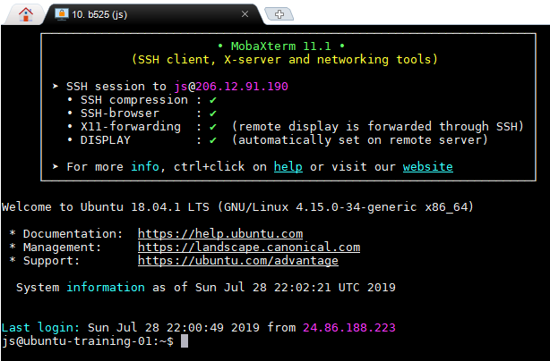
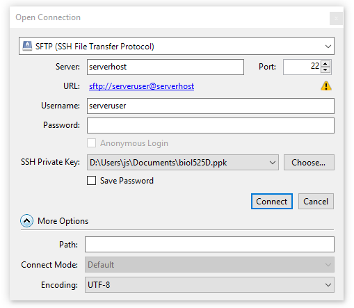
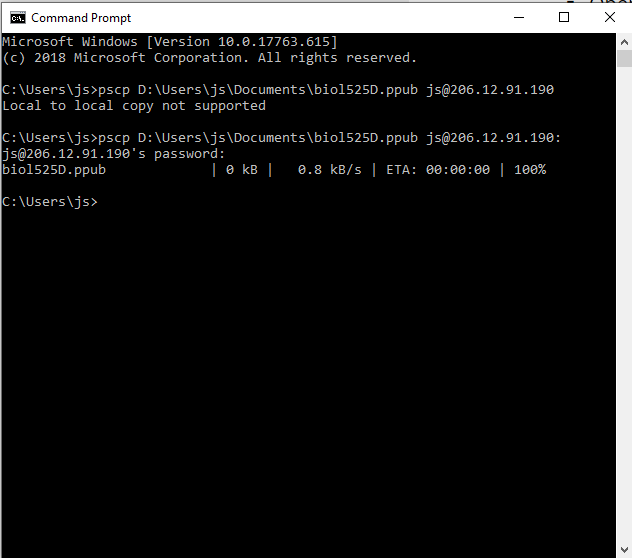
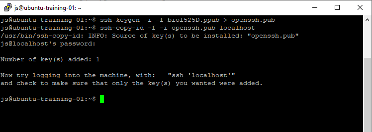

This page contains instructions to connect rapidly to your account with your private key. The exercise is part of Topic 1. It assumes you’ve completed the steps: generate a key and configure ssh-agent. The result will be a working setup on your computer to run programs remotely.
Note: watch out for placeholders! Replace the placeholders
serveruser,serverpass, andserverhost, with your assigned username, password, and server address (IP).
Instructions: Read the general text, and then follow only the instructions that pertain to your operating system and software.
Time to complete: 5 minutes
Edit (or create) file ~/.ssh/config, and add this information to it, replacing placeholders with your data, (and then save the file):
# Allows login to your assigned server by simply doing: ssh b525
Host b525
HostName serverhost
IdentityFile ~/.ssh/biol525D
User serveruser
ForwardAgent yes
ForwardX11 yes
Explanation:
Host setting is a friendly name that you choose. You will use it as a shorthand alias when connecting: i.e. ssh b525.HostName is the address of your assigned server (e.g. 123.123.123.123).IdentityFile is the path to the private key to use (it will use that one from your agent).User is your username on the server.ForwardAgent allows you to connect to other servers from that server while relying on the local agent. This is useful if you hop on from one server to another using one set of keys. If you configure your public key in your github accout, for instance, you would be able to issue git commands without passwords, on the server. If you don’t trust the administrators of the server, you would choose “no”.ForwardX11 allows running graphical applications installed on the server, but viewing the window from your computer. Again, if you don’t trust the admins, set it to “no”.man ssh_configConfiguring cyberduck.
No config needed! Once you’ve configured your ssh_config like
described above, then you should be able to connect to your server
using the short alias you configured, e.g. b525 as part of the “server name”. Cyberduck will
also automatically rely on your ssh-agent to provide the
necessary credentials.
The remaining step is to configure your account on the server to recognize the public key that is loaded in your ssh-agent’s keyring. We will require access to the files of the account. Therefore, we will login once, using your password, and then adding the public key to a recognized filename. On subsequent logins, the key will suffice. There is a helper command that does it for you:
ssh-copy-id -i ~/.ssh/biol525D.pub b525
What the above command does:
Note that the command above uses your new alias (i.e. b525), and the default username and server hostname are automatically
selected from ~/.ssh/config. It is equivalent to the full command:
ssh-copy-id -i ~/.ssh/biol525D.pub serveruser@serverhost
You will be asked you for your account password (not your key passphrase). Once this is configured, you won’t need your password again to connect over ssh.
Note: The first time you connect to a server over ssh, it will ask you to authorize the server’s public keys. The server is also using a public key to identify itself to your computer. Ideally, you know ahead of time which public key to expect.
Open a local terminal.
Edit the file ~/.ssh/config:
# moba's editor doesn't always open if you try to edit a file which does not exist
# so we -touch- it first, which will create it if needed.
touch ~/.ssh/config
edit ~/.ssh/config
In the editor, add the following section, making sure to replace serverhost and serveruser:
# Allows login to your assigned server by simply doing: ssh b525
Host b525
HostName serverhost
IdentityFile ~/.ssh/biol525D
User serveruser
ForwardAgent yes
ForwardX11 yes
Explanation:
Host setting is a friendly name that you choose. You will use it as a shorthand alias when connecting: i.e. ssh b525.HostName is the address of your assigned server (e.g. 123.123.123.123).IdentityFile is the path to the private key to use (it will use that one from your agent).User is your username on the server.ForwardAgent allows you to connect to other servers from that server while relying on the local agent. This is useful if you hop on from one server to another using one set of keys. If you configure your public key in your github accout, for instance, you would be able to issue git commands without passwords, on the server. If you don’t trust the administrators of the server, you would choose “no”.ForwardX11 allows running graphical applications installed on the server, but viewing the window from your computer. Again, if you don’t trust the admins, set it to “no”.man ssh_configSave the file and close the editor.
Run the following command (in a local terminal) to add our public key to the server account:
# notice that we are using our new alias from ~/.ssh/config: b525
ssh-copy-id -i ~/.ssh/biol525D.pub b525
# (if you skipped the ~/.ssh/config part, you can simply use
# serveruser@serverhost (your username and IP) instead of "b525")
You will be asked for your server password (not the key
passphrase). The tool will copy the public key to the account’s
~/.ssh/authorized_keys to recognize this key as a valid way to
authenticate.
If this is the first time you connect to that server with Moba, Moba will prompt us to cache the password. I don’t recommend relying only on saved user/passwords to login to servers. Keys are safer than saved passwords, and they never leave your computer even when you hop between proxies.
Note: You can access saved passwords in MobaXTerm in:
Menu->Settings->Configuration->General Tab->MobaXterm passwords management. You will not need to use a saved password to connect from now on.
The output of ssh-copy-id will look like this:
/bin/ssh-copy-id: INFO: attempting to log in with the new key(s), to filter out any that are already installed
/bin/ssh-copy-id: INFO: 1 key(s) remain to be installed -- if you are prompted now it is to install the new keys
myuser@myserver's password: ******
Number of key(s) added: 1
Now try logging into the machine, with: "ssh 'b525'"
and check to make sure that only the key(s) you wanted were added.
If you type ssh b525 like the command output suggests, you should automatically be logged in
without typing in a password.
Create a session bookmark in the MobaXterm menu.
We’ll bookmark a session for connecting to the server by double clicking. This will give us an opportunity to configure terminal settings to map your keyboard correctly.
In the Moba menu, do “Sessions”-> “New session”. Choose “SSH”:
serverhost (the IP)serveruserActivate the session
You can retrieve your session bookmark on the left, on the vertical tabs of the main Moba window, under “Sessions”. You can double-click it to start the session.
If you need to go back to change the parameters of the session, you can right click the session icon, and “edit”.
Activating your new session should allow you to see something like this (a prompt provided on the remote server):

Cyberduck works on Mac and Windows. In theory, it should pick up the keys loaded in the Pageant program, but there are numerous reports of the feature not working as expected on Windows.
So for cyberduck on Windows, you will have to choose either between username/password authentication or loading the key file (.ppk) locally in your session.
serverhost)serveruser)Uncheck “Save Password”
Here is a summary of the configuration for the connection:

When you use this connection, you will be prompted for the passphrase to your key. Once the keys are loaded, cyberduck will try to authenticate with them. If this fails (which is the case if you haven’t yet configured the public key on your account), it will revert to username/password login – this is serveruser/serverpass.
Hit “Connect”.
It’s not obvious to know you’re connected sometimes, esp if there are 0 files in your account. But the icon in the top right will show “Disconnect”, which means you’re connected. Once you see the file listing (consider that there may be 0 files listed), you can also toggle displaing hidden files with:
Menu -> View -> Show Hidden files
PuTTy can work in conjunction with Pageant to automatically
retrieve keys, but we have to copy our public key to the remote
account manually. The tool ssh-copy-id is included in certain
toolkits (namely git for windows, and windows Bash) and is a great shortcut.
But in this section we will show what to do when it is not available.
Create a new session profile in PuTTy.
serverhostserveruserman ssh_config).man ssh_config).b525Note: Quirks! - If your settings need to be adjusted later on, you will have to click “b525”, then “Load” the profile, make the change, go back to the “Sessions” tab, make sure the session you’re editing is selected, and hit “Save”.
Use the newly created PuTTy session:
We’re going to copy the public key over to the server.
Recall the location of your public key file (e.g. biol525D.ppub). This file was created with puTTYgen in the previous page.
cmd and pscp
cmd + enterWe will copy our public key file over to the server with pscp (which comes with putty). Replace the paths and serveruser/serverhost.
REM replace the path of the pubkey file with yours.
REM replace serveruser and serverhost with your assigned user/pass.
REM the colon at the very end is important.
pscp C:\Users\MyName\Documents\keys\biol525D.ppub serveruser@serverhost:
You should see something like this:

Note: The screenshot shows an error because the trailing colon is missing. Without it, pscp assumes that the parameter is the destination name of a local file, rather than a username and server. The error is corrected in the second command. You can use the UP arrow to recall previous commands.
biol525D.ppub.Option 2: Copy with cyberduck
/home/serveruser/). This is the default when you connect. Drag the file
biol525D.ppub from your local folder, and drop it into the cyberduck file
listing. You might be prompted for your passphrase or server
password.Activate the public key on the server account
The final step is to add the public key to the special file ~/.ssh/authorized_keys on our server account. We will connect
to the server using username/password and use the tool
ssh-copy-id installed there.
Log in to the server with your PuTTy session. If Pageant is
running in the system tray, you can right-click its icon, go to “Saved Sessions”
and pick b525. You will be prompted for you account password at this point. Successful login
should open a command prompt.
$), we enter two commands:
# convert the key
ssh-keygen -i -f biol525D.ppub > openssh.pub
# authorize that key to login as you
ssh-copy-id -f -i openssh.pub localhost
The first command converts the .ppub public key file from putty into the openssh format (the server runs openssh tools). The second
command lets ssh-copy-id deal with importing the key into ~/.ssh/authorized_keys. You will have to enter your server password (for the last time).
Note: The order of the command line arguments
-iand-fis sensitive. Pay attention to the order. It differs in the two commands. Make sure that you are entering the command as provided. The filebiol525D.ppubhas to match the name of the file that you have uploaded (via pscp or cyberduck)
The previous set of commands will look like this, when run:

exit command (e+x+i+t+enter).You’re all done. Next time you start the saved putty session, (and
your private key is loaded in the agent), you will be logged in
automatically. This applies to all the tools in the putty suite,
e.g. pscp and psftp.
You’re done with this exercise. go back to Topic 1